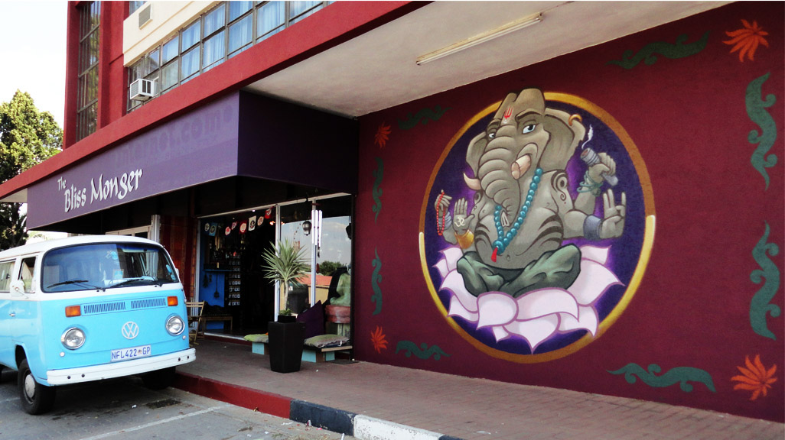
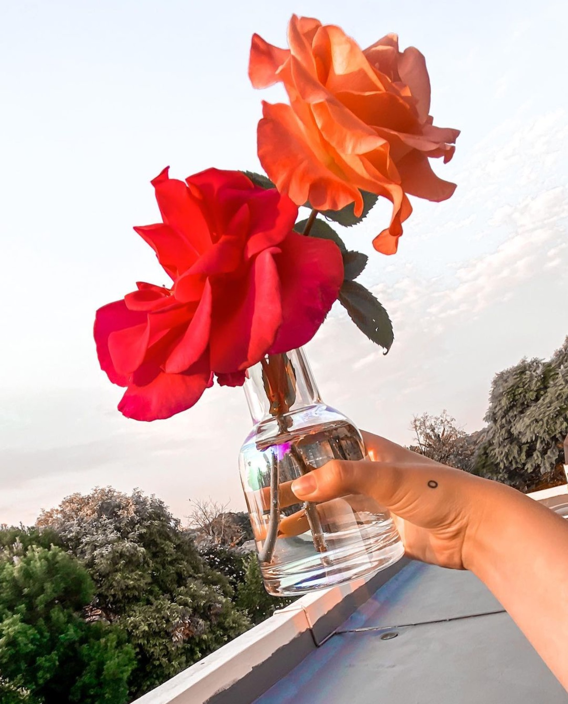
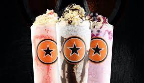

Bliss monger - magic , calming space - from clothing to jewelry to stones the bliss monger is a fav to go to. They have so many patterned clothing that flows in the wind so effortlessly. The music within the shop are chilled vibes tunes with a scent of sage.
My fav place to go for walks and look around is the Lifestyle Home Garden in Randburg - the staff are super nice and welcoming, the variety of succulents , roses with amazing scents and many others. There is a beautiful cafe that is surrounded by the plants. The rows of collies allow one to just breathe and soak it all in like a plant. The Bryanston Pet shop not only has fish and snakes but outside the shop is a beautiful nursery that I would say actually is my true favorite just because of location - much closer , easy to get to and is always a good time. I always seem to walk out with either a small plant or seedlings just for fun like sunflowers.
Restaurants Really love ROCCOMAMA’s chips and milkshakes - the Oreo or peanut butter are my fav Polpetta is probs my fav pizza place to go to - such beautiful atmosphere and great pizza bases
